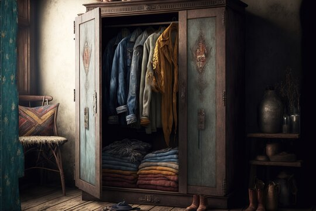

Margaret was a good friend... Was! She was very ambitious with her experiments on trying to create a language to control machines. She believed that the dead could speak with us through electromagnetic waves, and that create a machine language would make possible to speak with the dead. She went too far with her research and her soul is very disturbed.